たまに現れる
下から顔を出す、端からのぞく、跳び込む。3つの短い動きをランダムに再生します。
作業の合間、リアルなデグーがふいに現れます。壁紙はそのまま。マウス操作も邪魔しません。
13の毛色と3つの動き。毛色は複数選択できます。デモ画面では実際の動きを試せます。
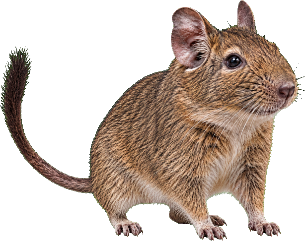
下から顔を出す、端からのぞく、跳び込む。3つの短い動きをランダムに再生します。
透明なウィンドウを重ねる方式。今の壁紙やデスクトップの配置を変えません。
1色だけ、複数色からランダム、全色ランダム。出現間隔とサイズもメニューから選べます。
13種類の毛色を収録。どの子も3つの動きで現れます。
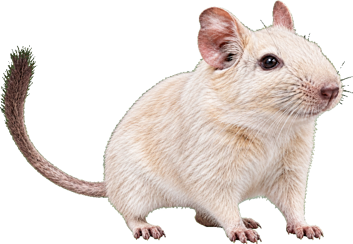
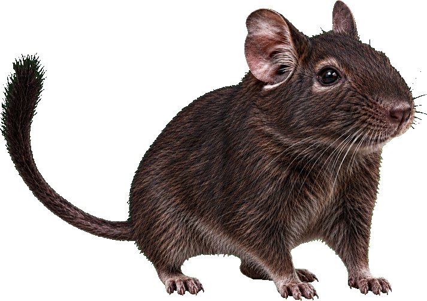
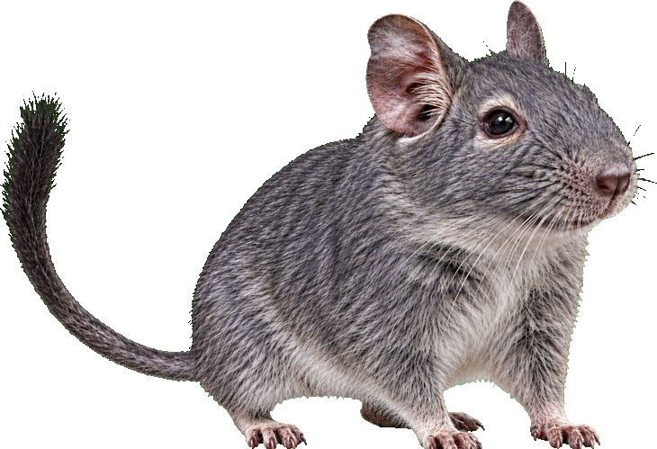
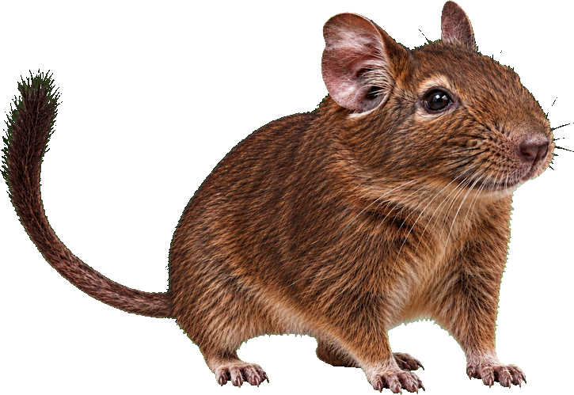
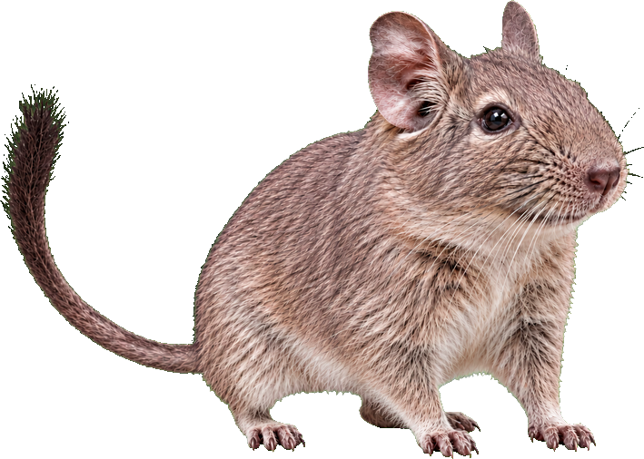
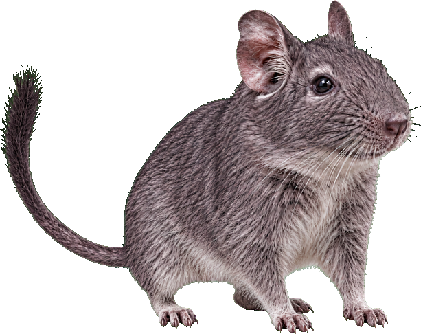
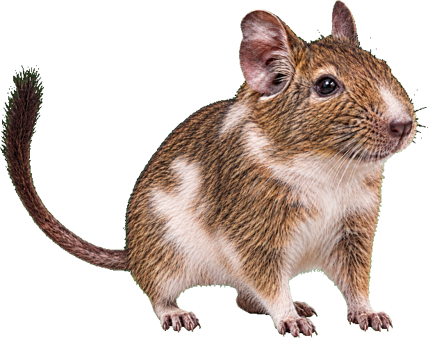
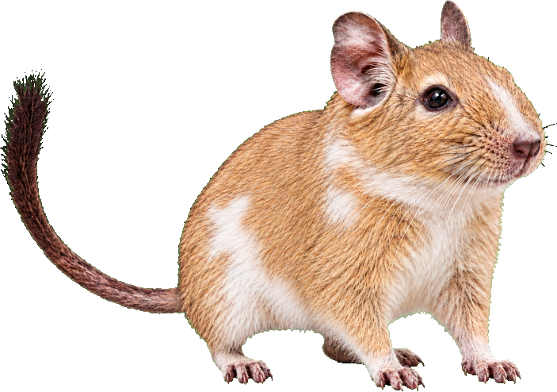
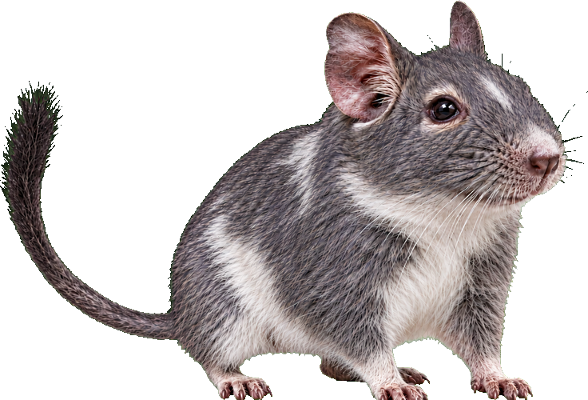
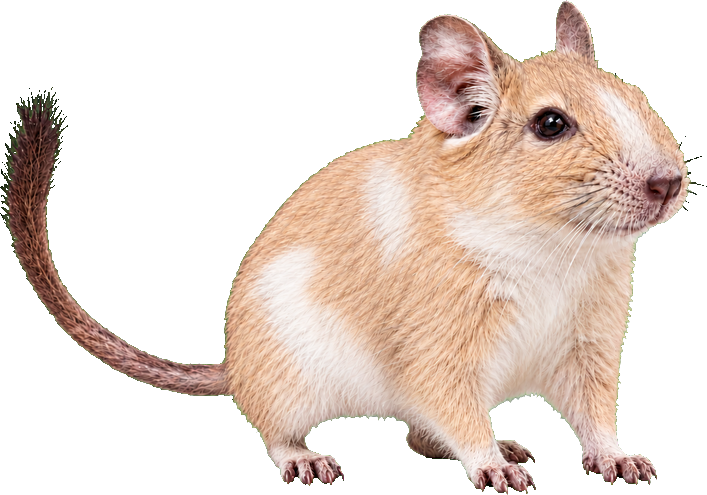
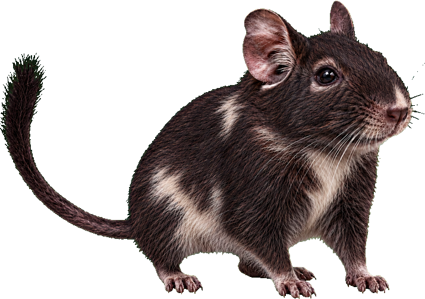
Mac（macOS 12以降、Intel・Apple Silicon）と Windows のインストーラーを、専用ページから直接ダウンロードできます。